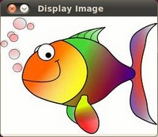

Load and Display an Image¶
Goal¶
In this tutorial you will learn how to:
- Load an image (using imread)
- Create a named OpenCV window (using namedWindow)
- Display an image in an OpenCV window (using imshow)
Source Code¶
Download the source code from here.
1 2 3 4 5 6 7 8 9 10 11 12 13 14 15 16 17 18 19 20 21 22 23 24 25 26 27 28 29 30 | #include <opencv2/core/core.hpp>
#include <opencv2/highgui/highgui.hpp>
#include <iostream>
using namespace cv;
using namespace std;
int main( int argc, char** argv )
{
if( argc != 2)
{
cout <<" Usage: display_image ImageToLoadAndDisplay" << endl;
return -1;
}
Mat image;
image = imread(argv[1], CV_LOAD_IMAGE_COLOR); // Read the file
if(! image.data ) // Check for invalid input
{
cout << "Could not open or find the image" << std::endl ;
return -1;
}
namedWindow( "Display window", WINDOW_AUTOSIZE );// Create a window for display.
imshow( "Display window", image ); // Show our image inside it.
waitKey(0); // Wait for a keystroke in the window
return 0;
}
|
Explanation¶
In OpenCV 2 we have multiple modules. Each one takes care of a different area or approach towards image processing. You could already observe this in the structure of the user guide of these tutorials itself. Before you use any of them you first need to include the header files where the content of each individual module is declared.
You’ll almost always end up using the:
- core section, as here are defined the basic building blocks of the library
- highgui module, as this contains the functions for input and output operations
#include <opencv2/core/core.hpp>
#include <opencv2/highgui/highgui.hpp>
#include <iostream>
We also include the iostream to facilitate console line output and input. To avoid data structure and function name conflicts with other libraries, OpenCV has its own namespace: cv. To avoid the need appending prior each of these the cv:: keyword you can import the namespace in the whole file by using the lines:
using namespace cv;
using namespace std;
This is true for the STL library too (used for console I/O). Now, let’s analyze the main function. We start up assuring that we acquire a valid image name argument from the command line.
if( argc != 2)
{
cout <<" Usage: display_image ImageToLoadAndDisplay" << endl;
return -1;
}
Then create a Mat object that will store the data of the loaded image.
Mat image;
Now we call the imread function which loads the image name specified by the first argument (argv[1]). The second argument specifies the format in what we want the image. This may be:
- CV_LOAD_IMAGE_UNCHANGED (<0) loads the image as is (including the alpha channel if present)
- CV_LOAD_IMAGE_GRAYSCALE ( 0) loads the image as an intensity one
- CV_LOAD_IMAGE_COLOR (>0) loads the image in the BGR format
image = imread(argv[1], CV_LOAD_IMAGE_COLOR); // Read the file
If the second argument is not specified, it is implied CV_LOAD_IMAGE_COLOR
Note
OpenCV offers support for the image formats Windows bitmap (bmp), portable image formats (pbm, pgm, ppm) and Sun raster (sr, ras). With help of plugins (you need to specify to use them if you build yourself the library, nevertheless in the packages we ship present by default) you may also load image formats like JPEG (jpeg, jpg, jpe), JPEG 2000 (jp2 - codenamed in the CMake as Jasper), TIFF files (tiff, tif) and portable network graphics (png). Furthermore, OpenEXR is also a possibility.
After checking that the image data was loaded correctly, we want to display our image, so we create an OpenCV window using the namedWindow function. These are automatically managed by OpenCV once you create them. For this you need to specify its name and how it should handle the change of the image it contains from a size point of view. It may be:
- WINDOW_AUTOSIZE is the only supported one if you do not use the Qt backend. In this case the window size will take up the size of the image it shows. No resize permitted!
- WINDOW_NORMAL on Qt you may use this to allow window resize. The image will resize itself according to the current window size. By using the | operator you also need to specify if you would like the image to keep its aspect ratio (WINDOW_KEEPRATIO) or not (WINDOW_FREERATIO).
namedWindow( "Display window", WINDOW_AUTOSIZE );// Create a window for display.
If the second argument is not specified by the user, it is implied to be WINDOW_AUTOSIZE, which means you can’t change the size of the image.
Finally, to update the content of the OpenCV window with a new image use the imshow function. Specify the OpenCV window name to update and the image to use during this operation:
imshow( "Display window", image ); // Show our image inside it.
Because we want our window to be displayed until the user presses a key (otherwise the program would end far too quickly), we use the waitKey function whose only parameter is just how long should it wait for a user input (measured in milliseconds). Zero means to wait forever.
waitKey(0); // Wait for a keystroke in the window
Result¶
Compile your code and then run the executable giving an image path as argument. If you’re on Windows the executable will of course contain an exe extension too. Of course assure the image file is near your program file.
./DisplayImage HappyFish.jpg
You should get a nice window as the one shown below:

Help and Feedback
You did not find what you were looking for?- Ask a question on the Q&A forum.
- If you think something is missing or wrong in the documentation, please file a bug report.

Table Of Contents
Previous topic
Cross compilation for ARM based Linux systems
Next topic
Load, Modify, and Save an Image